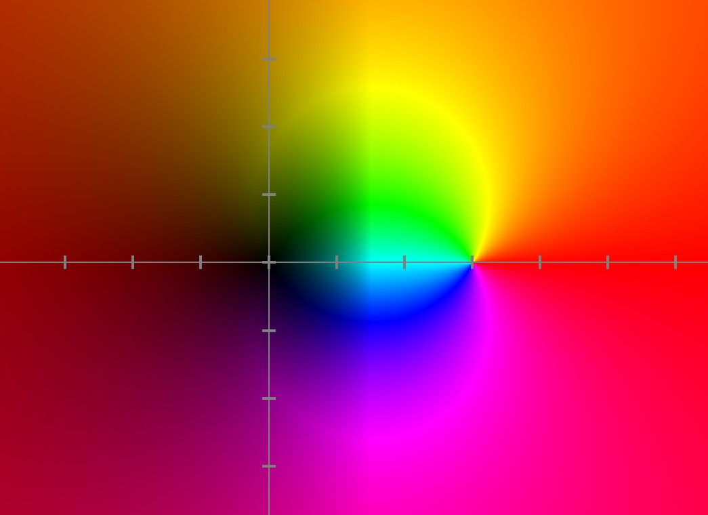

Root of a complex function is an input such that the output is 0+0i. A pole of a meromorphic complex function is a input such that the denominator equals 0+0i, and the function is therefore "infinite".
In the above example the function is z/(z-3). There is a root at z=0 (the graph is dark) and a pole at z=3 (the graph is white).
There are some distinct similarities in the way functions behave around roots and poles. For further reading see article "Riemann sphere".